Fig. 18. A mission requirement connects orbit, radio, pointing, electrical power, thermal control and launch mass. Arrows indicate dependencies: changing one subsystem often requires revisiting several others.
Fig. 18 shows why a good radio specification can still produce an unusable spacecraft. More transmitted power demands electrical input, heat removal, solar collection and eclipse storage. A larger antenna can reduce RF-power demand while adding pointing and structural demands [source].
Start with coverage, lifetime, orbit and allowable mass. At a defined electrical bus, a useful accounting identity is
Power is in watts; energy is in joules with seconds or Wh with hours. Every load must refer to that bus, including conversion losses needed to supply equipment at other voltages. Average power determines interval energy; simultaneous peak power sets current-handling requirements.
For an illustrative amplifier with RF output 40 W and DC input 100 W, efficiency is 0.4 and approximately 60 W becomes device heat. The power subsystem supplies 100 W. Antenna efficiency and feeder losses are additional interfaces. Carry every efficiency once at its defined boundary.
Teach it. Trace a proposed doubling of RF output through electrical input, eclipse energy, solar recharge, waste heat and launch mass.
Pay for a Maneuver With Momentum and Propellant
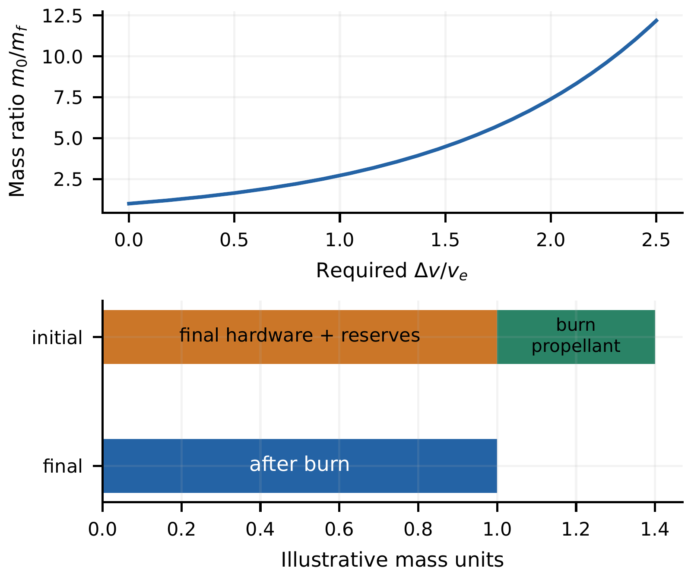
Fig. 19. Mass ratio grows exponentially with required velocity change divided by effective exhaust speed. The schematic bars distinguish consumed propellant from final hardware and reserves still aboard after this burn.
Fig. 19 shows what an orbit-transfer calculation has left unpaid. Propulsion must provide the required while accelerating both hardware and remaining propellant. Conservation of momentum relates thrust and expelled mass [source]:
Thrust is in N, expelled mass rate in kg/s, effective exhaust speed in m/s and reference m/s. Specific impulse is in seconds. Effective exhaust speed can include pressure thrust; physical nozzle speed alone may require another term.
Incremental momentum accounting gives , where vehicle mass decreases. Integrate between total masses immediately before and after the burn:
Final mass can include fuel reserved for later burns. With the same and no discarded stages, successive mass ratios multiply. For illustrative kg, m/s and m/s, kg and consumed propellant is 56.8 kg.
Launch also incurs gravity, drag and steering losses. Earth’s eastward surface speed can assist an appropriate eastward launch; it does not eliminate orbital-energy requirements. Staging discards hardware that no longer contributes useful thrust.
Teach it. Explain why fuel for burn two belongs in burn one’s final mass, and why high specific impulse alone does not establish whether a vehicle can lift off.
Trade Electrical Power Against Thrust and Time
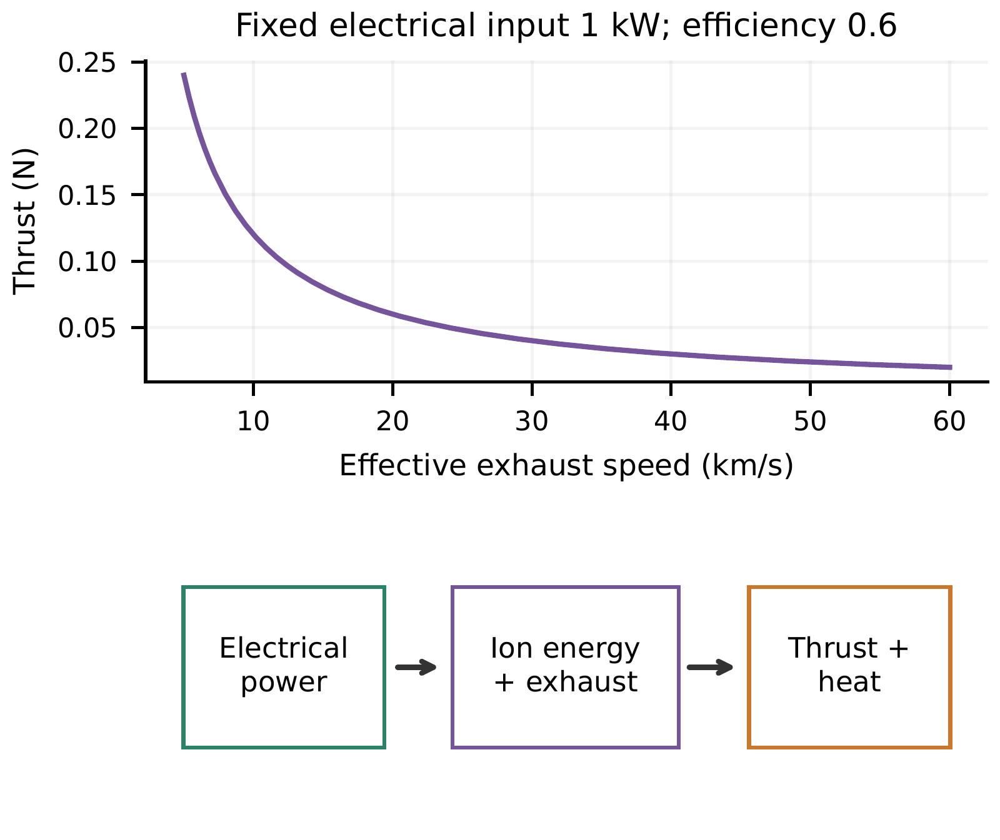
Fig. 20. At fixed electrical input and defined kinetic efficiency, higher exhaust speed reduces achievable thrust. The lower diagram follows electrical power into ion acceleration, useful momentum flux and losses.
Fig. 20 shows why an efficient electric thruster may need a long maneuver. High exhaust speed gives substantial momentum per propellant mass, but kinetic energy per mass grows with speed squared [source].
For defined efficiency , This is an explanatory energy-flow model, rather than a complete thruster specification. Ionization, beam divergence, neutralization and auxiliaries belong consistently inside or in separate losses.
At 1 kW input, and km/s, thrust is 0.04 N and flow is kg/s. A small force can accumulate useful impulse over time in orbit. For approximately constant mass, with in seconds; use the rocket equation when mass changes substantially.
Ion and Hall thrusters accelerate charged particles electrically and require charge management. Chemical engines typically supply much greater thrust for short maneuvers. Long low-thrust transfers use different trajectories from an impulsive Hohmann construction.
Teach it. At fixed power and efficiency, predict the thrust and mass-flow changes when exhaust speed doubles. Name a mission constraint that might favor lower specific impulse.
Keep Pointing Separate From Orbital Position
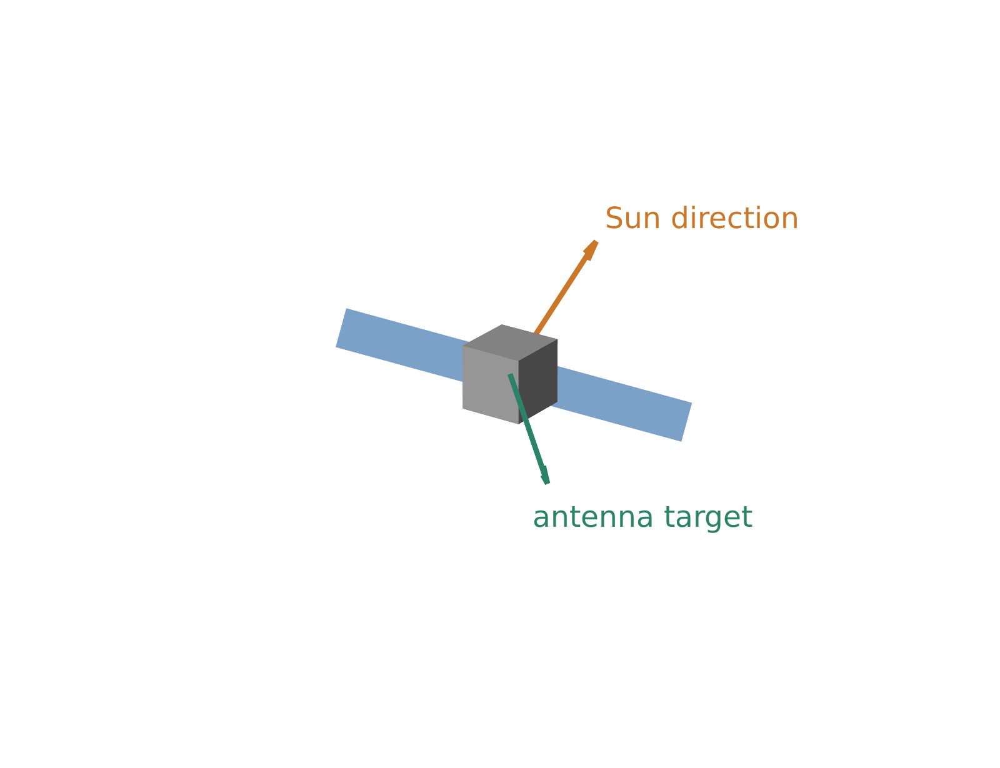
Fig. 21. Solar-facing and antenna-target directions differ for the schematic spacecraft. Body attitude, panel articulation or antenna steering must accommodate both. Orientation is a separate state from orbital position.
Fig. 21 shows why the correct orbit alone cannot establish communication. Position determines where the target lies; attitude determines where the hardware points. Panels, antennas, radiators and sensors can prefer different directions [source].
Attitude is body orientation in a stated frame. Reaction wheels turn the body through opposite internal angular-momentum changes. Persistent disturbance torque can saturate wheel storage, requiring momentum unloading. Thrusters provide external torque; magnetic torquers depend on the local magnetic field. Spin stabilization averages some disturbances but complicates antenna accommodation and solar collection. Three-axis stabilization supplies controlled body directions using sensors and actuators.
Station keeping changes an orbit; attitude control changes orientation. A force applied off center can affect both. For a simple panel a sun-angle error gives collection factor . Antenna pointing loss follows its own pattern rather than automatically following that same cosine. Radiator performance depends on the surfaces it views.
Teach it. Distinguish a failure repaired by changing the orbit, turning the body, or recomputing the ground-station pointing direction.
Read a Solar Cell’s Actual Operating Point
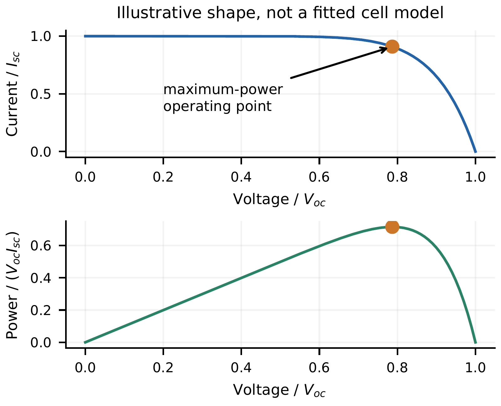
Fig. 22. Short-circuit current occurs at zero voltage; open-circuit voltage occurs at zero current. Their product is not available output. The maximum-power point lies between them. This curve illustrates the concept rather than fitting a particular cell.
Fig. 22 shows why a cell’s largest current and voltage cannot be used as though they occur together. The load selects a point on the current–voltage curve; maximum-power-point control seeks the largest product [source].
Voltage is in V, current in A, irradiance in W/m and illuminated area in m. Fill factor FF and efficiency are dimensionless. FF compares the actual operating rectangle with endpoint scales; efficiency compares electrical output with incoming optical power.
The illustrative normalized curve has maximum at and , giving FF. These values validate the diagram, not a semiconductor device model. Series cells add voltage; matched parallel strings add current. Shading, mismatch, packaging and converters can lower delivered array output. Cell efficiency alone excludes those system losses.
Teach it. Locate the two endpoints and maximum-power point. Explain why bus-voltage regulation and cell-side operating-point control can be different jobs.
Collect Enough Sunlight at End of Life
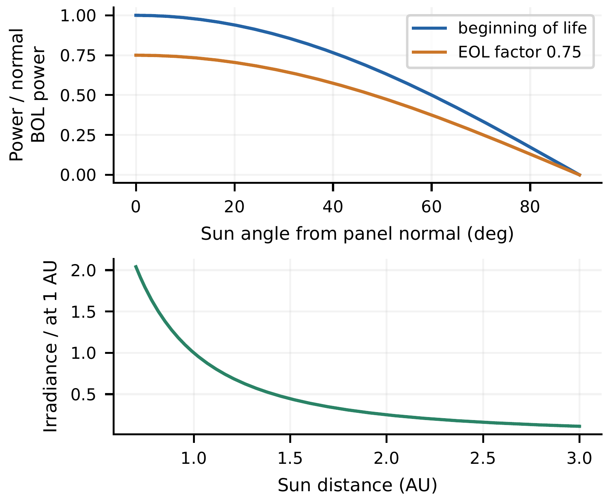
Fig. 23. Panel output scales with cosine of sun angle from the panel normal. An illustrative end-of-life factor lowers the whole curve. The lower panel separately shows inverse-square irradiance with solar distance.
Fig. 23 shows why an array rating must name illumination, orientation and mission age. An edge-on working panel intercepts little direct sunlight; a sun-facing panel may have degraded or be at an unfavorable temperature [source][source].
Solar distance and reference distance use matching units; is irradiance at 1 AU. Angle lies between panel normal and direction toward the Sun. Dimensionless factors describe stated array-to-bus losses and retained end-of-life output.
Assume W/m, m, , , and . Delivered power is approximately 298 W. These are illustrative inputs, not a selected flight design. A rating already incorporating EOL or conversion losses requires those factors only once.
A supplied temperature correction might be , with in K; apply it only over its valid range. Multi-junction cells collect different spectral bands, but their efficiency still needs a stated optical/electrical boundary. Solar generation weakens continuously with distance rather than ending abruptly beyond a particular planet.
Teach it. Explain how a 20% output reduction changes required area, and distinguish that reduction from a 20% margin applied to demand.
Store Energy Through the Dark Interval
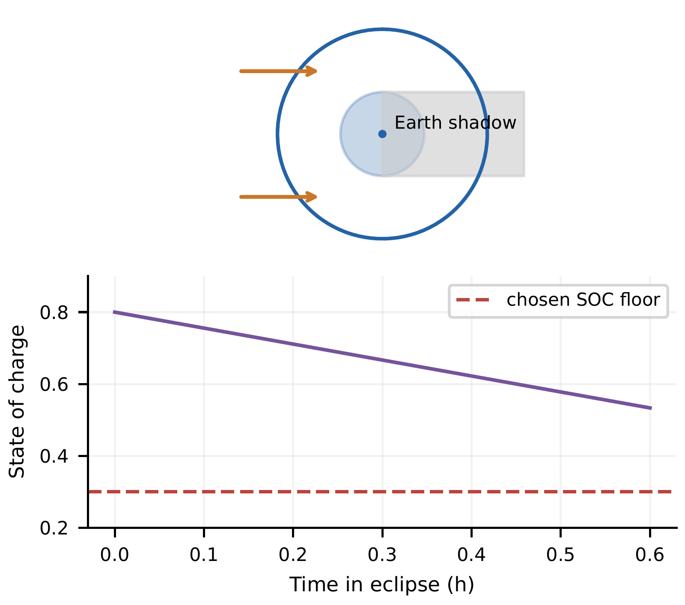
Fig. 24. Parallel sunlight creates an ideal cylindrical Earth shadow. An illustrative 200 Wh battery supplies an 80 W bus load through a 90%-efficient discharge path for 0.6 h, dropping SOC from 0.8 to approximately 0.533.
Fig. 24 shows the interval a solar-only spacecraft cannot meet directly from its array. Eclipse duration comes from geometry; required stored energy comes from integrating the actual bus load. Heaters and standby hardware may remain active with the transmitter silent [source][source].
For a circular orbit, Sun in the orbital plane, spherical Earth and parallel illumination, central-eclipse duration is
The shadowed arc spans twice the half-angle . The illustrative 900 km circle gives about 35 min. A different Sun–orbit plane angle can shorten or remove eclipse; penumbra and seasonal detail need a richer model.
For the energy/current calculations here, use an ideal constant-voltage battery whose terminal energy exchange equals its stored-energy exchange; and represent conversion-path efficiencies between battery terminals and bus. Let be the allowed capacity fraction removed per cycle:
Chosen margin is dimensionless. Capacity is available full capacity at the evaluated age and temperature. If it is fraction of beginning-of-life nameplate capacity, require .
The figure’s bus demand is Wh and removed energy 53.33 Wh. With allowed depth of discharge 0.5 and margin 1.2, minimum evaluated capacity is 128 Wh. The depicted choice is 200 Wh at that condition. Since , its drop is . At fixed 24 V battery voltage, discharge current is A. A higher simultaneous peak requires its own current check.
Teach it. Explain why efficiency divides bus energy, and why sufficient capacity does not establish acceptable peak current or cycle life.
Recharge Before the Next Eclipse
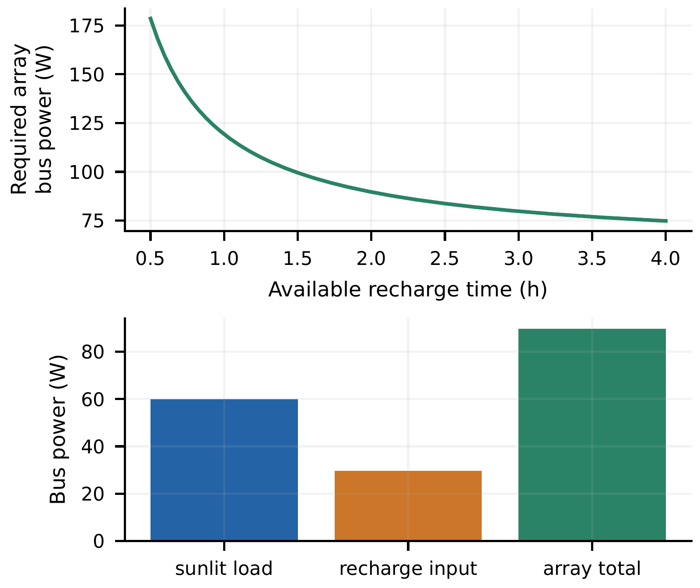
Fig. 25. Less recharge time demands more array output above the simultaneous sunlit load. The lower ledger uses a 60 W sunlit bus load and two hours to restore 53.33 Wh through a 90%-efficient charge path.
Fig. 25 shows the second storage condition: surviving one eclipse is insufficient if subsequent sunlight cannot restore its deficit. The array supplies current operations while charging for the next dark interval [source].
Define . For charging efficiency from bus surplus to stored energy and constant available time ,
Use hours with Wh. Restoring 53.33 Wh over 2 h at needs 29.63 W bus surplus. Adding the simultaneous 60 W load gives at least 89.63 W array bus output under the evaluated illumination.
A current limit can be stricter. At battery terminal voltage and allowed charging current , a constant-voltage approximation gives
Actual voltage, acceptance and taper depend on chemistry, temperature and SOC. Integrate the permitted charging profile when supplied. Unused sunlight can be curtailed rather than overcharging storage. Repeat this cycle at end of life after generation and usable capacity have changed.
Teach it. Explain why dividing eclipse energy by the entire orbital period can underestimate recharge power. Identify when adding solar area ceases to shorten recharge time.
Carry Waste Heat to a Radiating Surface
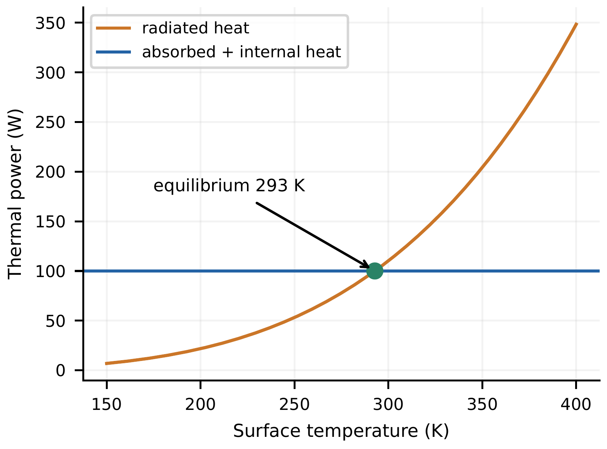
Fig. 26. An illustrative radiator emits as against a fixed 100 W absorbed-plus-internal heat load. Their crossing is near 293 K for emissivity 0.8 and area 0.3 m. This one-temperature model assumes a cold background.
Fig. 26 shows why thermal control belongs in the electrical budget. Most spacecraft electrical energy ultimately becomes heat. Radiating surfaces remove it, while eclipse heaters may be needed to keep hardware sufficiently warm [source].
Structures conduct heat internally; vacuum has no surrounding-air convection. A simple lumped balance is
Effective heat capacity is in J/K, absolute temperature in K, powers in W, area in m and emissivity dimensionless. The Stefan–Boltzmann constant is W/(mK). Here includes absorbed environmental inputs, while the last term is outgoing radiation. If using net exchange instead, remove the same ambient absorption from to avoid counting it twice.
The steady cold-background illustration has
For 100 W heat, and m, K. Celsius cannot enter the fourth power. A real radiator requires view factors, surface absorptivity, solar/Earth radiation and conductive paths.
Finite heat capacity means temperature responds over time rather than instantly following eclipse. Heater energy increases storage demand; increased amplifier DC input usually increases heat. Different components have different safe temperature ranges.
Teach it. Predict how equilibrium temperature changes when heat input doubles, then explain why one surface temperature cannot certify every component’s peak temperature.
Match Radiation Protection to Its Failure Mechanism
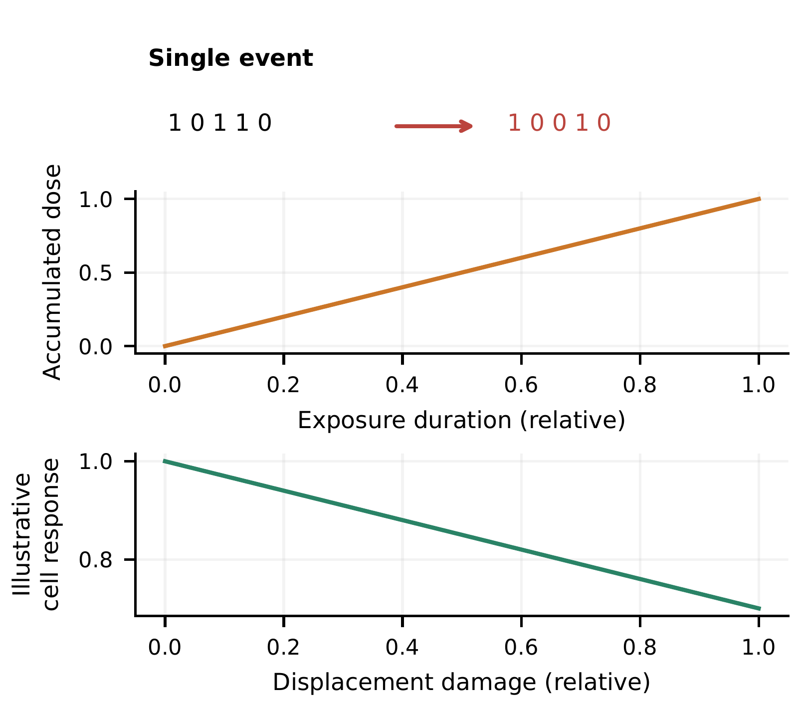
Fig. 27. One strike can upset a stored bit; dose accumulates; displacement damage can degrade semiconductor response. The lower trends are conceptual, rather than predicted device or mission behavior.
Fig. 27 shows why different radiation failures require different controls. Correcting a memory bit does not reverse accumulated transistor changes or repair a damaged solar-cell lattice [source].
Single-event effects follow individual energetic interactions. An upset can change a bit; latch-up can create excessive current requiring rapid protection and possibly power cycling. Total ionizing dose accumulates and shifts device characteristics. Displacement damage disrupts material structure and can reduce semiconductor or photovoltaic performance. Orbit, shielding, device design and exposure affect each mechanism differently.
Redundancy has a stated failure model. For three independent identical channels, each wrong with probability , a perfect majority voter fails when at least two channels are wrong:
At illustrative , this is 0.000298 per evaluated event. It is not a flight reliability estimate: shared power, clocks, correlated exposure or a failed voter violate its assumptions. Extra channels also add mass, power and heat. Shielding, qualified components, current protection and error correction address different parts of the problem.
Teach it. Match memory correction, current limiting, shielding and device qualification to the mechanisms they can address. Explain why a generic “radiation-proof” label supplies too little information.
Distinguish a Relay From a Receiver That Makes Decisions
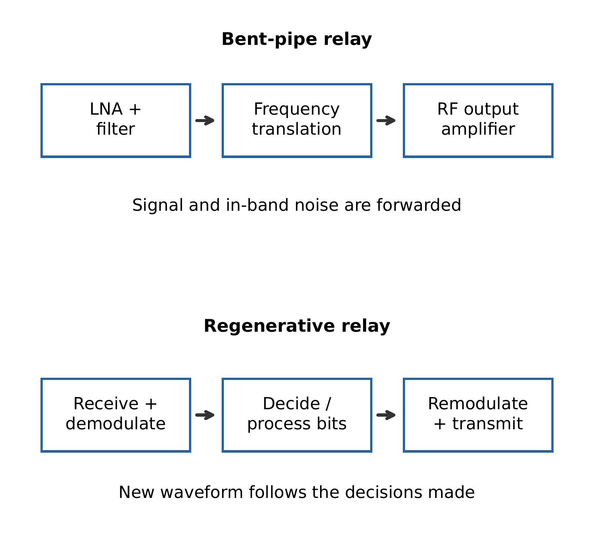
Fig. 28. A bent-pipe transponder filters, translates and amplifies a waveform. A regenerative relay makes information decisions before constructing a new outgoing waveform. These are functional sketches, not complete RF circuits.
Fig. 28 shows two different satellite jobs. A bent-pipe relay forwards an information-bearing waveform without interpreting every bit. A regenerative payload estimates digital information and retransmits according to those decisions [source].
A low-noise amplifier handles the weak receive input; later power amplification supplies transmitted RF output. Mixing produces sum and difference frequencies; filters select the desired translated band. An intermediate frequency can make filtering and amplification convenient before another conversion.
An ideal linear amplifier multiplies both signal and in-band noise by gain : . Real hardware adds noise. Gain alone cannot recover an uplink signal-to-noise ratio already lost. Regeneration can avoid forwarding that analog noise when decisions are correct, but a wrong detected bit does not become correct merely by retransmission.
Regeneration adds format support, processing demand and latency. Bent-pipe operation retains waveform flexibility within bandwidth and linearity limits. Both require power, cooling, pointing and reliability. Later radio chapters quantify noise and received power at explicit terminal planes.
Teach it. Explain which payload must understand the modulation and which can forward it without decoding. Identify weak-signal handling and large electrical heat loads in each architecture.
Compare Energy Sources by Their Mechanism
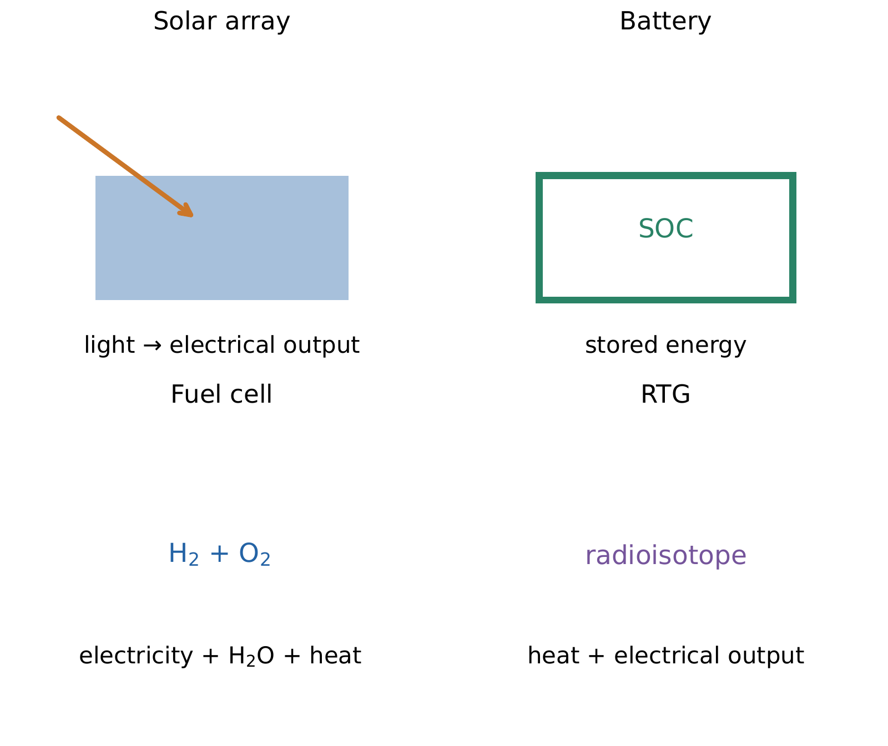
Fig. 29. Photovoltaics convert light; batteries store chemical energy; fuel cells consume supplied reactants; RTGs convert radioactive-decay heat thermoelectrically. The comparison is by mechanism, not a universal ranking.
Fig. 29 shows why generation and storage specifications answer different questions. Solar arrays produce while illuminated. Batteries supply stored energy until recharged. Fuel cells consume reactants and require tanks and support hardware. RTGs depend on decay rather than sunlight [source].
For an ideal hydrogen/oxygen cell, . With both tabulated electrode values given as reduction potentials,
Potential is in volts, is J per mole of balanced reaction, is its electron-transfer count and C/mol is Faraday’s constant. For the reaction as written, . Operating losses lower the loaded voltage, and supporting hardware reduces net system output.
An RTG supplies long-lived electrical output through thermoelectric conversion, with substantial heat still needing accommodation. Solar output depends on illumination, orientation and aging. Batteries depend on cycle life, temperature, power capability and SOC range. Select among mechanisms using the energy timeline and mission constraints.
Teach it. Explain which sources require sunlight, periodic recharge, supplied reactants or a continuing thermal source.
Sources
G. D. Durgin, ECE 6390, ASD06 Spacecraft Subsystems, supplied ASD6include.pdf and linked lecture recording. Lecture recording.
1. Why can a solar array that supplies the sunlit load still fail the full-orbit energy budget?
Include the eclipse load and the finite recharge interval.
Sunlit generation must supply the live load and replace energy spent in eclipse, including conversion losses and the stated end-of-life margin. Matching only the instantaneous sunlit load leaves no recharge energy.